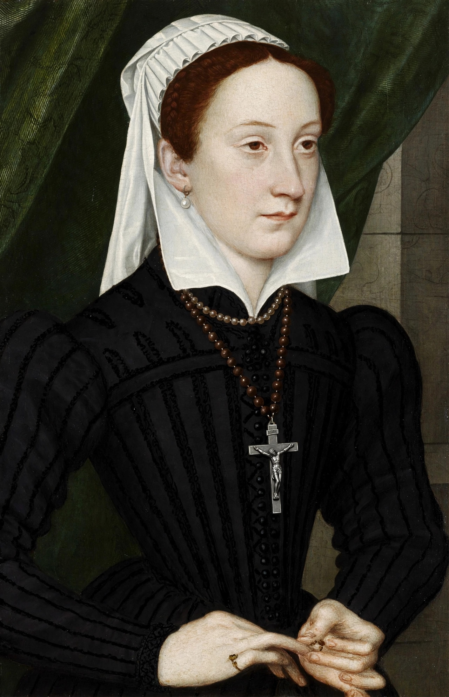

| Mary, Queen of Scots | |
|---|---|
 | |
| Reign | 14 December 1542 – 24 July 1567 (Scotland) |
| Born | 8 December 1542, Linlithgow Palace, Scotland |
| Died | 8 February 1587 (aged 44), Fotheringhay Castle, England |
| Burial | Peterborough Cathedral; reinterred Westminster Abbey, 1612 |
| Spouses | Francis II of France; Henry Stuart, Lord Darnley; James Hepburn, Earl of Bothwell |
| Issue | James VI and I |
| Parents | James V of Scotland; Mary of Guise |
Mary, Queen of Scots (Mary Stuart; 8 December 1542 – 8 February 1587) was Queen of Scotland from December 1542 — when, six days old, she succeeded her father James V — until her forced abdication in 1567, and queen consort of France from 1559 to 1560 as wife of Francis II. Widowed young, she returned to a Scotland transformed by Protestant Reformation; her personal rule collapsed amid scandal and rebellion, and she fled to England, where Elizabeth I held her captive for nineteen years. A focus for Catholic plots against Elizabeth, Mary was tried for treason after the Babington Plot and executed at Fotheringhay Castle in 1587. Her son became James VI of Scotland and, in 1603, James I of England.
Mary became queen as an infant during the "Rough Wooing", Henry VIII's attempt to force her marriage to his son Edward. Instead, at five she was sent to France under the Treaty of Haddington to marry the Dauphin Francis, and was raised at the glittering Valois court alongside her Guise relatives. Tall, accomplished, and fluent in several languages, she married Francis in 1558; he became king in 1559, making her queen consort, but died in December 1560. Because Mary was, through her grandmother Margaret Tudor, a great-niece of Henry VIII, Catholic Europe regarded her as a strong claimant — indeed, to Catholics who denied Elizabeth's legitimacy, the rightful queen of England — and she quartered the arms of England with her own, alarming Elizabeth.
Mary returned to Scotland in August 1561 and governed pragmatically at first, retaining Protestant advisers such as her half-brother Lord James Stewart and William Maitland, while hearing Mass privately. In 1565 she married her cousin Henry Stuart, Lord Darnley — also a descendant of Margaret Tudor — a match that strengthened her English claim but quickly disintegrated: Darnley was jealous, unstable, and complicit in the murder of Mary's secretary David Rizzio, dragged from her presence and stabbed in March 1566. Their son James was born that June. In February 1567 Darnley, recovering from illness at Kirk o' Field in Edinburgh, was murdered when the house was blown up; his body was found strangled in the garden. Suspicion fell on James Hepburn, Earl of Bothwell — and when Mary married Bothwell just three months later (whether by choice or after abduction), outrage erupted. Defeated at Carberry Hill in June 1567, Mary was imprisoned in Loch Leven Castle and forced to abdicate in favour of her infant son.
Escaping from Loch Leven in May 1568, Mary raised an army, lost the Battle of Langside, and fled across the Solway into England, expecting Elizabeth's help. Instead she was held — honourably at first, then ever more strictly — at Carlisle, Bolton, Tutbury, Sheffield (for fourteen years under the Earl of Shrewsbury), Chartley, and Fotheringhay. The "casket letters", purportedly written by Mary to Bothwell and produced at an inquiry in 1568–69, seemed to implicate her in Darnley's murder; their authenticity has been disputed ever since, and the originals are lost. Plot after plot formed around her — the Northern Rebellion (1569), Ridolfi (1571), Throckmorton (1583) — and after the Babington Plot of 1586, in which Elizabeth's spymaster Walsingham's agents intercepted her ciphered correspondence consenting to Elizabeth's assassination, she was tried by a commission of peers at Fotheringhay. Found guilty, she was beheaded on 8 February 1587 in the castle's great hall, meeting death with celebrated composure, dressed in crimson — the colour of Catholic martyrdom.
First buried at Peterborough Cathedral, Mary was reinterred by her son in Westminster Abbey in 1612, opposite Elizabeth. Her life — beauty, faith, catastrophe, and charisma — has inspired poetry, Schiller's drama, Donizetti's opera, and countless biographies and films; historians continue to argue over her judgment, her involvement in Darnley's death, and whether Elizabeth's government destroyed a dangerous rival or a convenient prisoner.
See also: Elizabeth I · James VI and I · Anne Boleyn